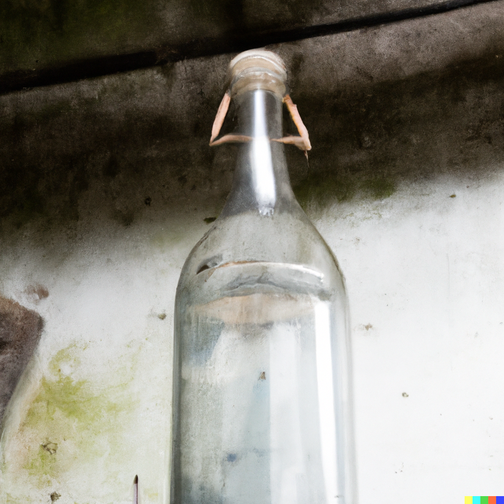
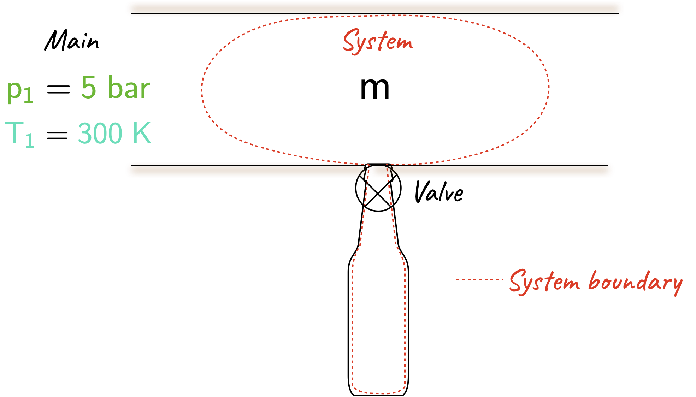

L14 examples
Problem 1
1 kg of air initially at a temperature of \(\require{color}{\color[rgb]{0.164799,0.878862,0.723179} 300^ \; K}\) undergoes the following cycle:
- expansion at a constant pressure until the volume is doubled;
- cooling at a constant volume;
- isothermal compression to the initial state.
Plot the cycle on a \(\require{color}{\color[rgb]{0.315209,0.728565,0.037706}p}-{\color[rgb]{0.918231,0.469102,0.038229}\nu}\) diagram and calculate (a) the heat and work transfers and internal energy changes during each stage of the cycle, (b) the net work produced, and (c) the net work as a fraction of the positive heat addition.
You will need these two values: \(R = 287 \; \frac{J}{kg \cdot K}\), and \({\color[rgb]{0.878548,0.880173,0.060757}c}_{\color[rgb]{0.079785,0.618358,0.483717}V} = 718 \; \frac{J}{kg \cdot K}\).
Solution
The diagram is shown below, where the work done is the area enclosed by the graph, i.e., the shaded region.

- It will be useful to break this solution up into its constitutent parts; for (i) we have: \[ \large \require{color} {\color[rgb]{0.562040,0.190215,0.568721}W} = \int {\color[rgb]{0.315209,0.728565,0.037706}p}d{\color[rgb]{0.079785,0.618358,0.483717}V} = {\color[rgb]{0.315209,0.728565,0.037706}p} \left({\color[rgb]{0.079785,0.618358,0.483717}V_2} - {\color[rgb]{0.079785,0.618358,0.483717}V_1} \right) \] \[ \large \require{color} = mR \left({\color[rgb]{0.164799,0.878862,0.723179}T_2} - {\color[rgb]{0.164799,0.878862,0.723179}T_1} \right) = 1 \times 287 \times {\color[rgb]{0.164799,0.878862,0.723179}300} = {\color[rgb]{0.562040,0.190215,0.568721}86.1 \; kJ} \]
\[ \large \require{color} {\color[rgb]{0.878548,0.880173,0.060757}\Delta U }= m{\color[rgb]{0.878548,0.880173,0.060757}c}_{{\color[rgb]{0.079785,0.618358,0.483717}V}} \left({\color[rgb]{0.164799,0.878862,0.723179}T_2} - {\color[rgb]{0.164799,0.878862,0.723179}T_1} \right) = 1 \times 718 \times {\color[rgb]{0.164799,0.878862,0.723179}300} = {\color[rgb]{0.878548,0.880173,0.060757}215.4 \; kJ } \]
\[ \large \require{color} {\color[rgb]{0.334690,0.296180,0.998454}Q} = {\color[rgb]{0.562040,0.190215,0.568721}W} + {\color[rgb]{0.878548,0.880173,0.060757}\Delta U }= {\color[rgb]{0.562040,0.190215,0.568721}86.1} + {\color[rgb]{0.878548,0.880173,0.060757}215.4} = {\color[rgb]{0.334690,0.296180,0.998454}301.5 \; kJ} \]
Next, for (ii) we have:
\[ \large \require{color} {\color[rgb]{0.562040,0.190215,0.568721}W} = \int {\color[rgb]{0.315209,0.728565,0.037706}p} d{\color[rgb]{0.079785,0.618358,0.483717}V} = 0 \]
\[ \large \require{color} {\color[rgb]{0.878548,0.880173,0.060757}\Delta U} = m {\color[rgb]{0.878548,0.880173,0.060757}c}_{{\color[rgb]{0.079785,0.618358,0.483717}V}} \left({\color[rgb]{0.164799,0.878862,0.723179}T_3} - {\color[rgb]{0.164799,0.878862,0.723179}T_2} \right) = 1 \times 718 \times ({\color[rgb]{0.164799,0.878862,0.723179}-300}) = {\color[rgb]{0.878548,0.880173,0.060757}-215.4 \; kJ} \]
\[ \large \require{color} {\color[rgb]{0.334690,0.296180,0.998454}Q} = {\color[rgb]{0.562040,0.190215,0.568721}W} + {\color[rgb]{0.878548,0.880173,0.060757}\Delta U }={\color[rgb]{0.334690,0.296180,0.998454}-215.4 \; kJ} \]
Finally, for (iii) we have:
\[ \large \require{color} {\color[rgb]{0.562040,0.190215,0.568721}W} = \int {\color[rgb]{0.315209,0.728565,0.037706}p}d{\color[rgb]{0.079785,0.618358,0.483717}V} = \int \frac{mR{\color[rgb]{0.164799,0.878862,0.723179}T}}{{\color[rgb]{0.079785,0.618358,0.483717}V}} d{\color[rgb]{0.079785,0.618358,0.483717}V} = mR{\color[rgb]{0.164799,0.878862,0.723179}T} ln \left( \frac{{\color[rgb]{0.079785,0.618358,0.483717}V_1}}{{\color[rgb]{0.079785,0.618358,0.483717}V_2}} \right) = 1 \times 287 \times {\color[rgb]{0.164799,0.878862,0.723179}300} \times ln \left( \frac{1}{2} \right) = {\color[rgb]{0.562040,0.190215,0.568721}-59.7 \; kJ} \]
\[ \large \require{color} {\color[rgb]{0.334690,0.296180,0.998454}Q} = {\color[rgb]{0.562040,0.190215,0.568721}W} + {\color[rgb]{0.878548,0.880173,0.060757}\Delta U }={\color[rgb]{0.334690,0.296180,0.998454}-59.7 \; kJ} \]
- The net work produced is given by
\[ \large \require{color} {\color[rgb]{0.562040,0.190215,0.568721}W} = {\color[rgb]{0.562040,0.190215,0.568721}W_{12}} + {\color[rgb]{0.562040,0.190215,0.568721}W_{23}} + {\color[rgb]{0.562040,0.190215,0.568721}W_{31} } = {\color[rgb]{0.562040,0.190215,0.568721}86.1} + {\color[rgb]{0.562040,0.190215,0.568721}0 }- {\color[rgb]{0.562040,0.190215,0.568721}59.7} = {\color[rgb]{0.562040,0.190215,0.568721}26.4 \; kJ} \]
- The net work as a fraction of the positive heat addition
\[ \large \require{color} \frac{{\color[rgb]{0.562040,0.190215,0.568721}W}}{{\color[rgb]{0.334690,0.296180,0.998454}Q_{in}}} = \frac{{\color[rgb]{0.562040,0.190215,0.568721}26.4}}{{\color[rgb]{0.334690,0.296180,0.998454}301.5}} = 8.7 \; \% \]
Notes: As the problem is cyclic, \({\color[rgb]{0.878548,0.880173,0.060757}\Delta U}\) overall is zero and the net heat transfer balances the net work produced. This is an example of a heat engine – i.e., a device that converts heat into work. However, it is extremely impractical and very inefficient: most of the positive heat input is rejected to the environment.
Problem 2
A completed evacuated bottle of volume \(0.1 \; m^3\) is to be filled with Helium from a main where the pressure is \(\require{color}{\color[rgb]{0.315209,0.728565,0.037706}p_1} = {\color[rgb]{0.315209,0.728565,0.037706}5 \; bar}\) and the temperature is \(\require{color}{\color[rgb]{0.164799,0.878862,0.723179}T_1} = {\color[rgb]{0.164799,0.878862,0.723179}300 \; K}\) The bottle is connected as shown, the valve is opened, helium enters the bottle and the valve is shut when the pressure in the bottle is \(\require{color}{\color[rgb]{0.315209,0.728565,0.037706}5 \; bar}\). If the bottle is well lagged so there is no heat loss to the surroundings, calculate the final temperature in the bottle and the mass entering. Assume helium behaves as a perfect gas with \(R = 2.08 \; kJ/\left( kg \cdot K \right)\) and \(\gamma=1.67\).
| Evacuated bottle | Schematic |
|---|---|
|  |  |
Solution
With the system boundary as shown above, where no mass is crossing the boundary, work is done on the system by the surrounding gas in the main. The pressure remains constant at \(p_1\) on the moving boundary so
\[ \large \require{color} {\color[rgb]{0.562040,0.190215,0.568721}W} = {\color[rgb]{0.315209,0.728565,0.037706}p_1} {\color[rgb]{0.079785,0.618358,0.483717}\Delta V} = {\color[rgb]{0.315209,0.728565,0.037706}p_1} \left( - m {\color[rgb]{0.918231,0.469102,0.038229}\nu_1} \right). \]
Applying the first law yields:
\[ \large \require{color} {\color[rgb]{0.334690,0.296180,0.998454}Q} - \left( - m {\color[rgb]{0.315209,0.728565,0.037706}p_1} {\color[rgb]{0.918231,0.469102,0.038229}\nu_1} \right) = m{\color[rgb]{0.878548,0.880173,0.060757}c}_{{\color[rgb]{0.079785,0.618358,0.483717}V}} \left( {\color[rgb]{0.164799,0.878862,0.723179}T_2} - {\color[rgb]{0.164799,0.878862,0.723179}T_1} \right) \]
Note that \(\require{color}{\color[rgb]{0.334690,0.296180,0.998454}Q}\) is zero as it is adiabatic. Thus the mass cancels out from both sides and by using the ideal gas equation we have
\[ \large \require{color} R {\color[rgb]{0.164799,0.878862,0.723179}T_1} = {\color[rgb]{0.878548,0.880173,0.060757}c}_{{\color[rgb]{0.079785,0.618358,0.483717}V}} \left( {\color[rgb]{0.164799,0.878862,0.723179}T_2} - {\color[rgb]{0.164799,0.878862,0.723179}T_1} \right). \]
Rearranging noting that \(\require{color}{\color[rgb]{0.878548,0.880173,0.060757}c}_{\color[rgb]{0.079785,0.618358,0.483717}V} + R = {\color[rgb]{0.986252,0.007236,0.027423}c}_{\color[rgb]{0.315209,0.728565,0.037706}p}\),
\[ \large \require{color} {\color[rgb]{0.164799,0.878862,0.723179}T_2} = \left( \frac{{\color[rgb]{0.878548,0.880173,0.060757}c}_{\color[rgb]{0.079785,0.618358,0.483717}V} + R}{{\color[rgb]{0.878548,0.880173,0.060757}c}_{\color[rgb]{0.079785,0.618358,0.483717}V}} \right) {\color[rgb]{0.164799,0.878862,0.723179}T_1} = \gamma {\color[rgb]{0.164799,0.878862,0.723179}T_1} = 1.67 \times {\color[rgb]{0.164799,0.878862,0.723179}300 }= {\color[rgb]{0.164799,0.878862,0.723179}501 \; K} \]
Applying the ideal gas law to work out the final state and to find the mass of gas that has entered the bottle yields
\[ \large \require{color} {\color[rgb]{0.315209,0.728565,0.037706}p_2} {\color[rgb]{0.079785,0.618358,0.483717}V_2} = m R {\color[rgb]{0.164799,0.878862,0.723179}T_2} \Rightarrow m = \frac{{\color[rgb]{0.315209,0.728565,0.037706}p_2} {\color[rgb]{0.079785,0.618358,0.483717}V_2}}{R {\color[rgb]{0.164799,0.878862,0.723179}T_2}} = \frac{{\color[rgb]{0.315209,0.728565,0.037706}5 \times 10^{5}} \times 0.1}{2080 \times {\color[rgb]{0.164799,0.878862,0.723179}501}} = 0.048 \; kg \]
Some important notes: - The temperature rises as the surrounding does work on the system.
- Although adiabatic, this is not a quas-equlibrium process, so only the end states can be related. This is because the helium expands into the empty bottle in an unrestrained manner.
- The large temperature rise \(\require{color}\left({\color[rgb]{0.164799,0.878862,0.723179}201 \; K}\right)\) comes from the work done by the gas in the main. This reduces the density and thereby restricts the amount of helium entering. Since the bottle has a fixed volume, a reduction in density results in a reduction in mass that can enter the bottle. - In practice there would probably be some heat transfer, so if the valve were left open long enough, the helium would cool back down to \(\require{color}{\color[rgb]{0.164799,0.878862,0.723179}300\; K}\) and more of it would enter the bottle. However, thermodynamics cannot inform us how long this would take; we need tools from heat transfer to understand that.